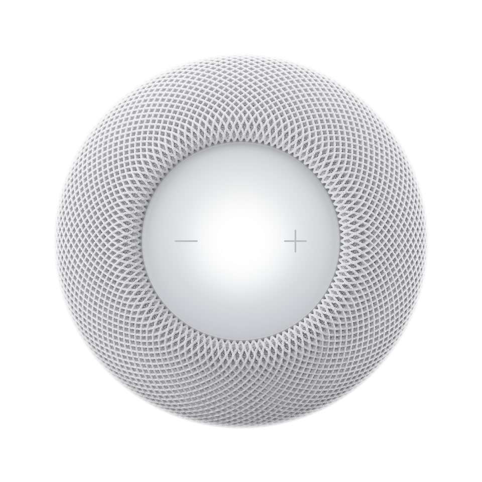
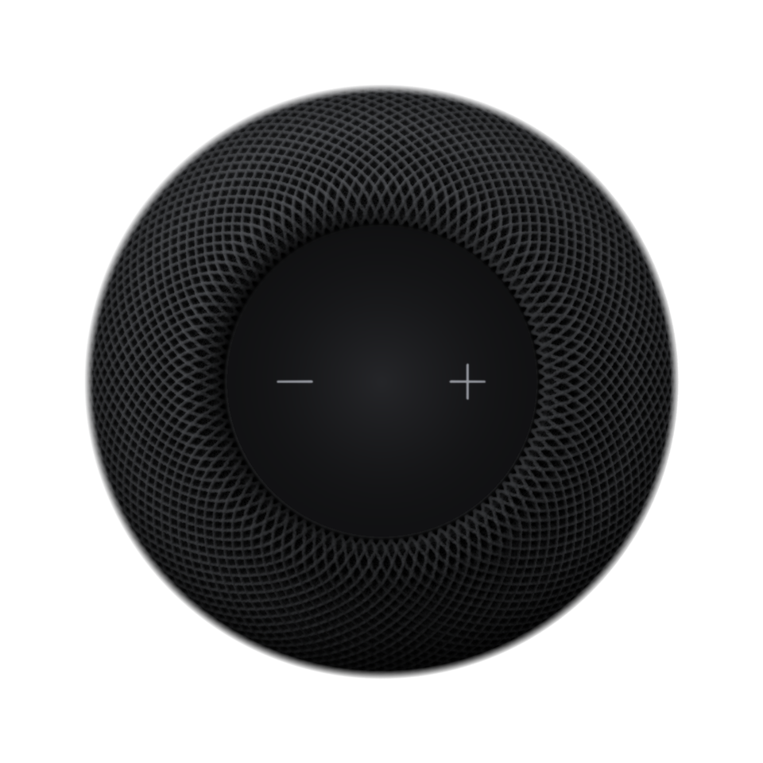

装上，然后就忘了它
一个文件装好全部功能，图标住进系统托盘。Windows 和 macOS 一样，没有额外依赖。
浏览器、游戏、播放器、会议，声音都算。整台电脑的声音，直接送到同一张网里的 HomePod：不用改系统输出，不用管是哪个 App。
首次启动会被系统拦一次。先看安装说明同一网络里的接收器，自动出现
一个文件装好全部功能，图标住进系统托盘。Windows 和 macOS 一样，没有额外依赖。
同一张网里的 HomePod 自动出现。要密码的只问一次，之后交给系统钥匙串。
浏览器、游戏、播放器、会议，声音都跟着走。音量在托盘里调，扬声器同步变。
该无损的无损，该准时的准时，其余时间它不出声。
Windows 走 WASAPI 环回，macOS 走 Core Audio 进程抽头。可以跟默认输出，也可以钉住某个设备。Windows 上还能只抓一个 App。
未压缩 ALAC，44.1 kHz。从系统到接收器，没有一步有损压缩。
同一网络的接收器经 mDNS 自动列出。要 PIN 的只问一次，存进 Windows 凭据管理器（DPAPI）或 macOS 钥匙串，密钥永不进日志。
低延迟 200 ms，稳定 2 s，中间随便调。拖一下试试。
封面里取三种颜色，投到 HomePod 顶上，切歌就换。也可以手选六组模板，暂停时光保持不变。
系统媒体会话里有什么，托盘卡片就显示什么。
两只 HomePod 合成一个目标。两只跟同一只时钟，左右声道锁步。
声渡跟着接收器的 PTP 时钟发，不是各播各的。
封面里取三种颜色，投到 HomePod 顶上。也可以手选模板。点一个试试。


三色从封面提取，切歌就换。没有封面时，拿媒体图标取色。
六组现成配色，预览和接收器同步。
暂停时光保持不变。关掉，顶部回到待机屏。
一个进程、一份日志、一条本地路径。它做了什么，你随时能自己看。
一个可执行文件装好全部功能。没有 WebView，没有常驻服务，没有后台联网的组件。
音频只在本机和接收器之间直传。发现走 mDNS，必要时补一轮定向单播。没有外部服务器。
接收器密码只问一次，存进 Windows 凭据管理器（DPAPI）或 macOS 钥匙串。日志里不会出现密钥。
GPL-3.0，全开源。哪台接收器、哪个系统版本、跑通了哪条链路，验证记录都随仓库发布。
Windows 10 · 11 与 macOS 14.4+（Apple Silicon）· GPL-3.0-only
第一次启动会多一步。macOS 上多两步。
安装包还没有代码签名，SmartScreen 会提示「Windows 已保护你的电脑」。点更多信息，再点仍要运行。就这一次。
dmg 是 ad-hoc 签名。首次打开被拦下时，去系统设置 → 隐私与安全性，在页面下方点仍要打开。
macOS 15 起必须授权本地网络。不给，发现接收器和 PTP 对时都会失败，列表就是空的。允许后重开应用。
macOS 构建是 darwin/arm64，Intel Mac 不在支持范围。Windows 侧 x64 可用。
Windows 没有系统级的 AirPlay 发送。macOS 的系统输出只能整机切到 AirPlay，没有延迟模式可选，也看不到接收器细节。声渡按接收器自己的方式配对、对时：未压缩 ALAC、PTP 时钟、四档延迟、立体声锁步、媒体卡片和氛围灯。全在一个托盘图标里。
HomePod 和 HomePod mini（软件 27）、HomePod 立体声组合、Mac 的 AirPlay 接收器（包括要密码的那种），都在真机上验证过。Apple TV 的屏幕 PIN 配对已经实现。只支持 FairPlay 的电视不支持，声渡会在发现阶段直接标出来，不会静默连上。
四种模式：低延迟 200 ms、标准 1.5 s、稳定 2 s，再加 20 到 2000 ms 的自定义。切换会短暂重启音频流，状态行显示进度。看视频用低延迟，听音乐用标准。
不需要。GPL-3.0 开源，免费，无账号。接收器密码只在首次配对时问一次，之后存进系统钥匙串。日志里没有密钥。
音频只在局域网里走。Windows 版会连 GitHub 检查和安装更新；macOS 版在签名更新源就绪前不联网检查。发现接收器走 mDNS，必要时补一轮定向单播，全在本地。
声渡只做音频，并且把这一件事做完整。FairPlay 不在设计范围内。遇到只支持 FairPlay 的接收器，它会快速失败并说明原因，而不是连上却没声音。
Windows 在 SmartScreen 里点「更多信息 → 仍要运行」。macOS 到「系统设置 → 隐私与安全性」底部点「仍要打开」。原因很简单：项目还没有代码签名证书，不是安装包有问题。源码整份在 GitHub 上，可以自己编译比对。
要投屏或视频的（声渡只送音频）。接收器只支持 FairPlay 的（部分电视，发现阶段就会标出）。Intel Mac（只构建 Apple Silicon）。只想送某一个 App 的声音：Windows 支持单应用采集，macOS 是整机采集。